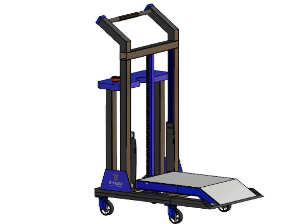

A Strauss está pronta para contribuir
Na Strauss, transformamos ideias em soluções inovadoras. Fundada com o compromisso de excelência, nossa empresa nasceu da paixão por oferecer produtos e serviços que unem qualidade, tecnologia e sustentabilidade.
Com foco em plataformas elevatórias (lifting platforms), desenvolvemos uma abordagem integrada que permite oferecer soluções completas e personalizadas para cada cliente, sempre priorizando a qualidade, eficiência e inovação.
